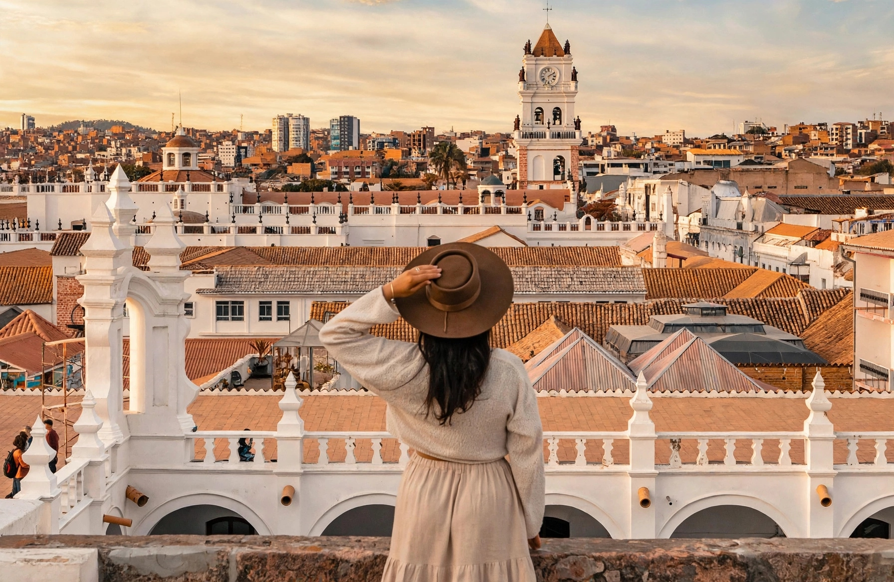
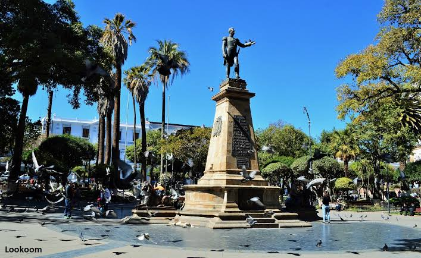
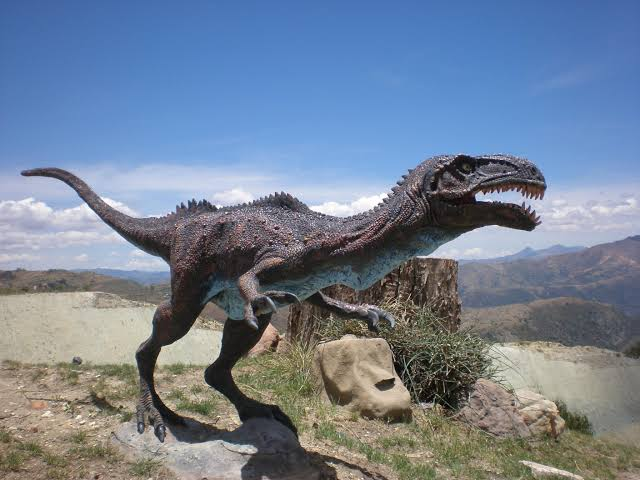
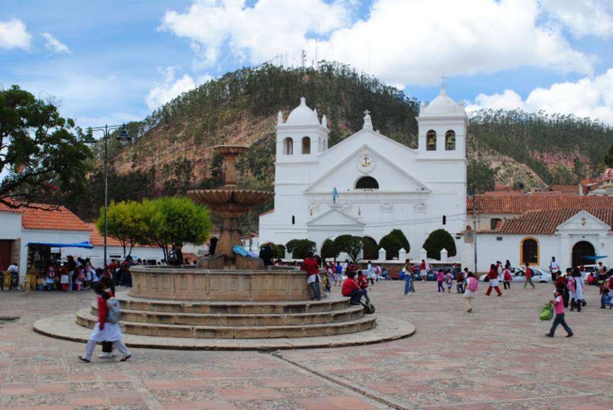
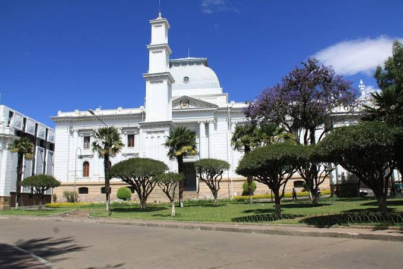

Sucre
Descubre la Ciudad Blanca de Bolivia con Trans Azul Bolivia.

TRANS AZUL BOLIVIA
SUCRE
Viaja con comodidad y descubre la historia, cultura y belleza de la Ciudad Blanca.
Conoce Sucre
Sucre es una de las ciudades más importantes de Bolivia y es reconocida por su arquitectura colonial, su historia, sus calles tradicionales y su riqueza cultural. Con Trans Azul Bolivia puedes conocer algunos de los lugares más representativos de esta hermosa ciudad.
Lugares turísticos

Plaza 25 de Mayo
Es el centro histórico de Sucre y uno de los lugares más representativos de la ciudad, rodeado de edificios históricos y espacios tradicionales.

Casa de la Libertad
Importante edificio histórico donde se proclamó la independencia de Bolivia. Actualmente funciona como museo histórico y cultural.

Parque Cretácico
Lugar turístico donde se pueden observar numerosas huellas de dinosaurios conservadas en una enorme pared rocosa.

Castillo de la Glorieta
Construcción histórica de arquitectura singular, rodeada de jardines y considerada uno de los atractivos turísticos de Sucre.

La Recoleta
Mirador ubicado en una zona elevada de Sucre desde donde se puede apreciar una hermosa vista panorámica de la ciudad.

Parque Bolívar
Uno de los espacios verdes más conocidos de Sucre, ideal para pasear y disfrutar de un ambiente tranquilo dentro de la ciudad.

Descubre Sucre
Recorre la Ciudad Blanca y disfruta de su arquitectura, historia, cultura y atractivos turísticos. Una experiencia que combina tradición y belleza en un solo destino.
Información del destino
📍 Destino
Sucre, Bolivia
🏛 Cultura
Ciudad reconocida por su arquitectura colonial, historia y patrimonio cultural.
🍽 Gastronomía
Destaca por platos tradicionales como el mondongo, chorizos chuquisaqueños y otros sabores locales.